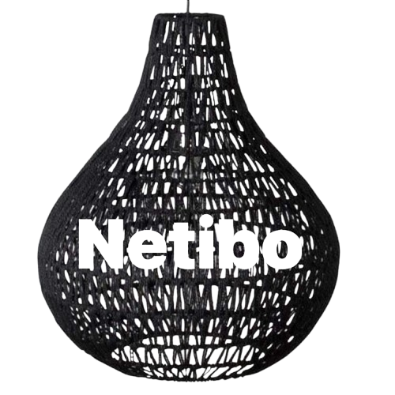

Netibo Craft

In 2019, residents of Sitio Sandayong in Liki, Sogod, Cebu, began producing eco-friendly rattan products as a means of livelihood during the pandemic. This initiative led to the establishment of NETIBO, a company specializing in sustainable rattan items such as chairs, tables, lampshades, racks, and flower stands. Rattan, recognized as one of the most abundant non-timber forest products, served as a sustainable alternative to wood in furniture manufacturing. NETIBO attracted both local and international clients, including customers from Germany, by offering customizable designs. "From pandemic hardship to global success, NETIBO's story is a testament to the power of sustainable innovation and community resilience."